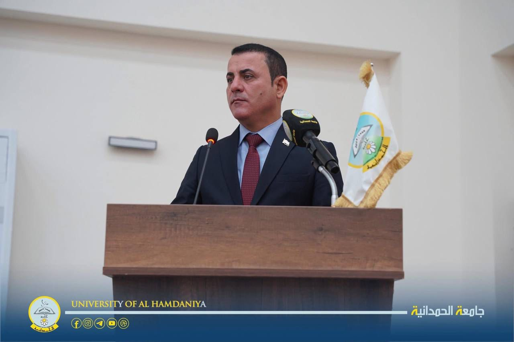
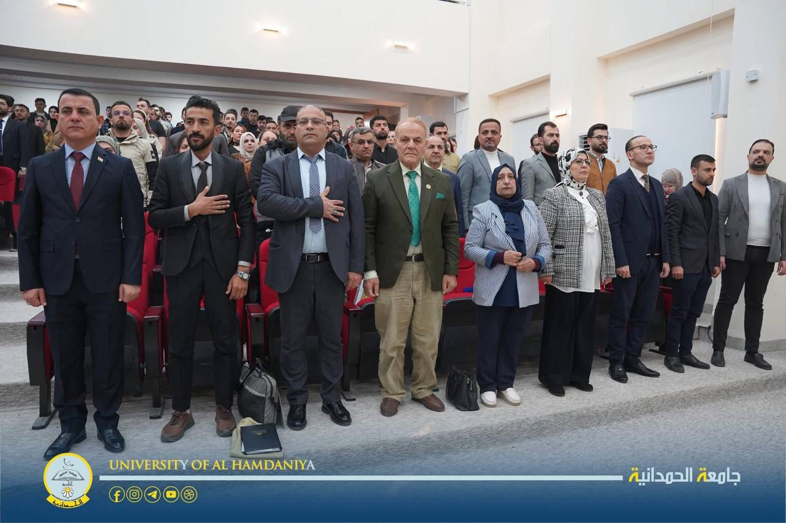
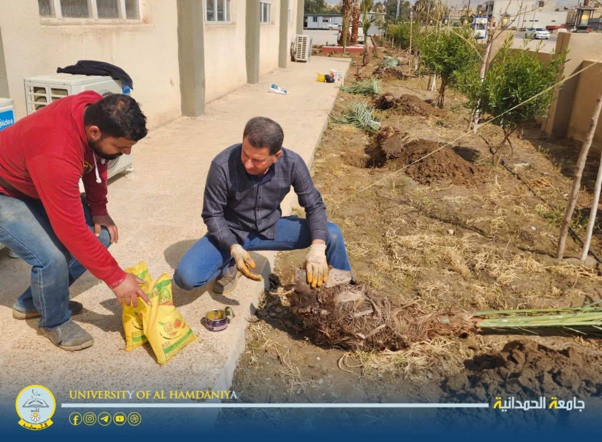
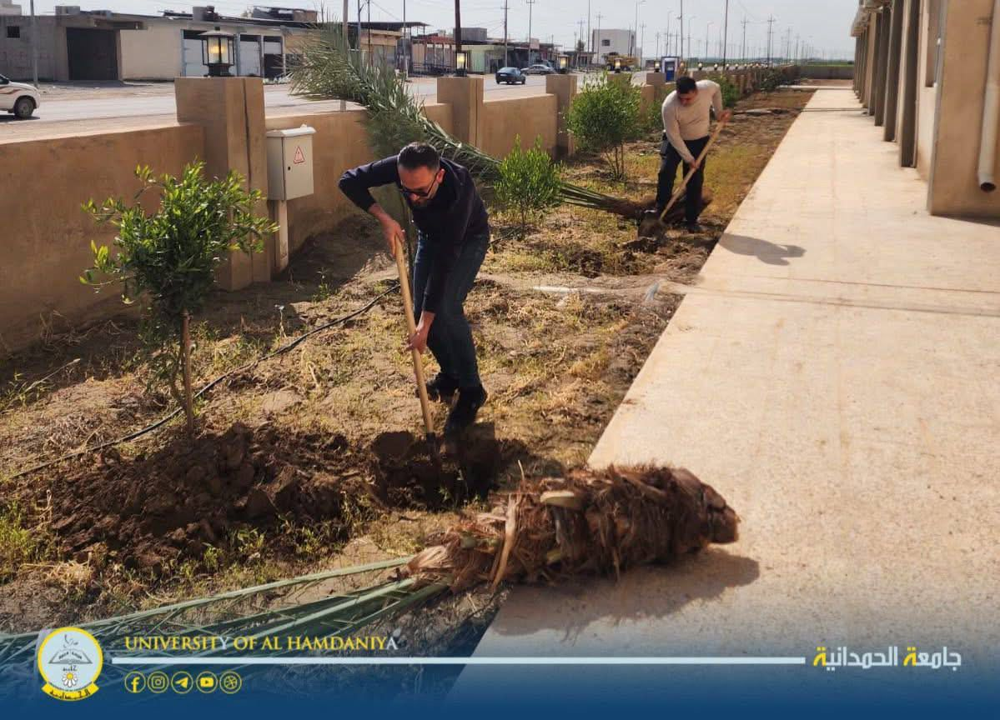
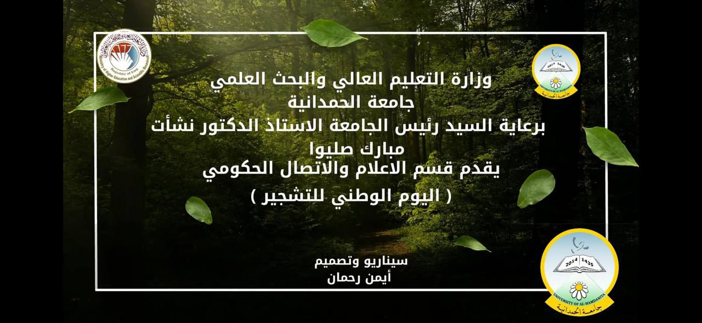
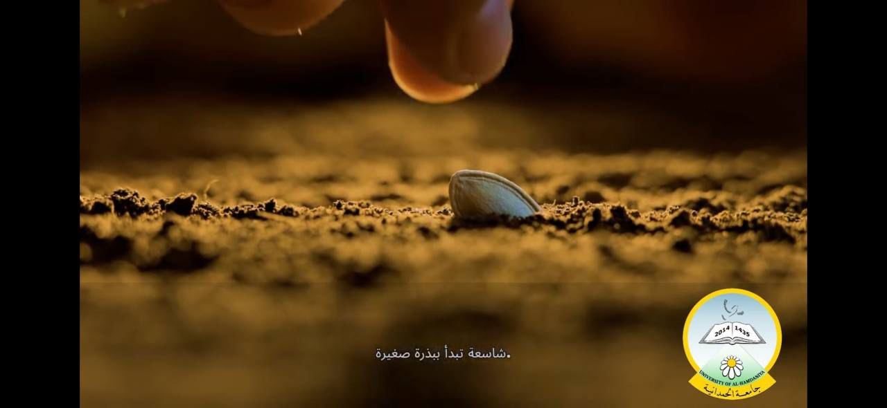
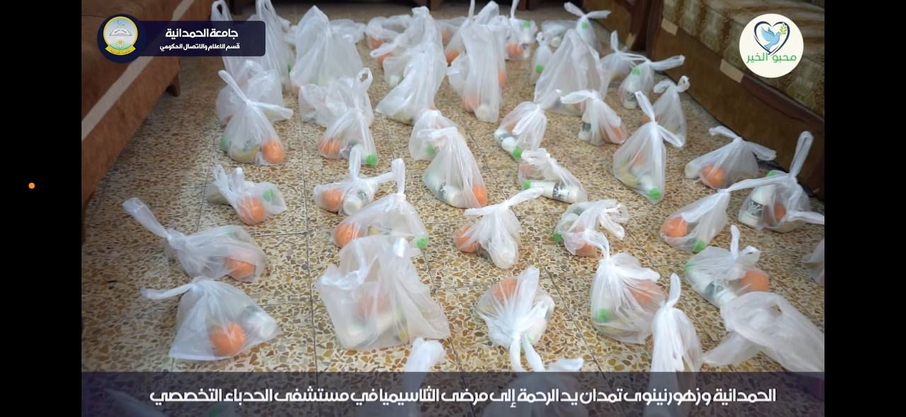
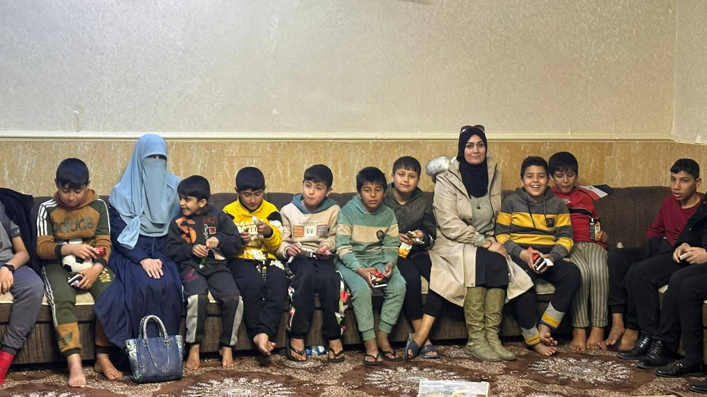
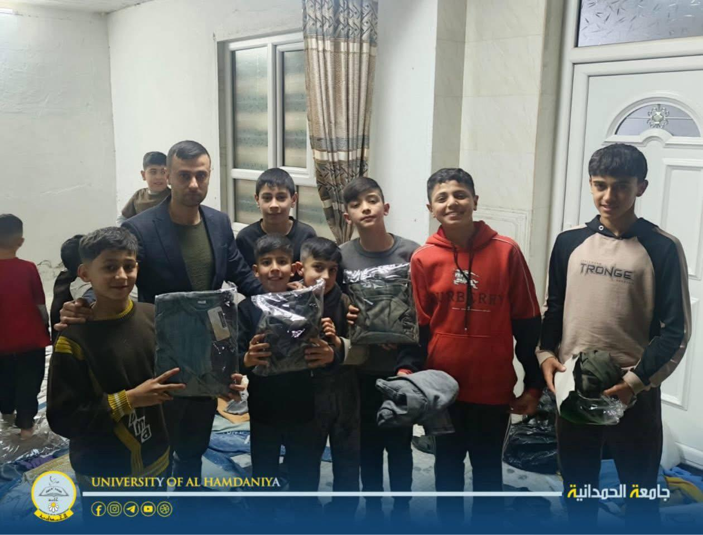
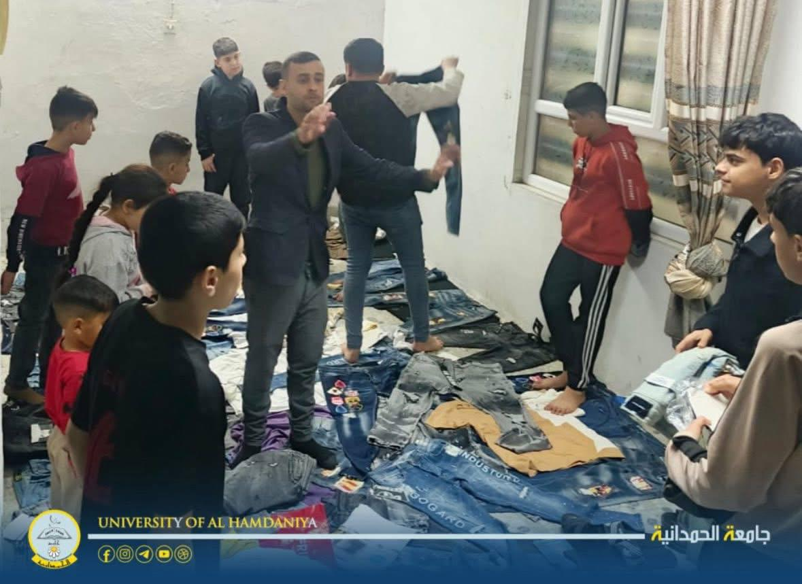

مرحباً بكم في قسم الحملات التطوعية
الجامعة تحيي اليوم الوطني للتشجير: مناسبة كبيرة لمكافحة التصحر وتحسين بيئة العراق
أحيت جامعة الحمدانية "اليوم الوطني للتشجير"، بحفل كبير وفعاليات وأنشطة واسعة قدمتها الكليات والأقسام العلمية والإدارية بكوادرها جميعا، احتفاءً بالمناسبة الرسمية المُقرة حكوميا في الـ12 من آذار لكل عام.
وافتتح الحفلَ رئيسُ الجامعة وممثلُ وزير التعليم العالي والبحث العلمي في المناسبة، أ. د. نشأت مبارك صليوا بكلمة قال فيها، إن الحمدانية تجسّد دورا وطنياً عبر انشغالها بمعالجة الجفاف وزيادة المساحات الخضراء.
وأضاف صليوا أن الجامعة عملت وستواصل العمل نحو الوصول إلى تحقيق أهداف التنمية البيئية بخلْق أكاديمية صديقة لها، تسهم في تحسين البيئة ورفع جودة الهواء.
وشهد حفل إطلاق فعاليات اليوم الوطني حضورا أكاديميا من جامعات المحافظة، فضلا عن نخب ثقافية واجتماعية شاركت الحمدانية في إحيائها الفعالية الوطنية الرامية إلى تحسين بيئة العراق والنهوض بها من الجفاف إلى الاخضرار.
#اليوم_الوطني_للتشجير
#قسم_الإعلام_والاتصال_الحكومي
#رئاسة_جامعة_الحمدانية


العودة للرئيسية
مرحباً بكم في قسم الحملات التطوعية
ديوان الجامعة ووحدتها الزراعية يزينان حدائقها بالأشجار
ضمن فعاليات اليوم الوطني للتشجير، زرع منتسبو قسم الديوان والوحدة الزراعية عشرات الشتلات والنباتات في حدائق الجامعة ومحيطها، وذلك يوم 12 آذار، في إطار الجهود الرامية إلى تعزيز المساحات الخضراء وتحسين البيئة الجامعية.
وتهدف هذه الجهود إلى إضفاء مظهر جمالي على البيئة الجامعية وتعزيز الوعي بها لدى المنتسبين والطلبة، فضلا عن زيادة الرقعة الخضراء وتوفير أجواء أكاديمية صحية وصديقة للبيئة، تسهم في تحسين جودة الهواء وإيجاد بيئة تعليمية أكثر ملاءمة.


العودة للرئيسية
مرحباً بكم في قسم الحملات التطوعية
الجامعة تزرع في اليوم الوطني للتشجير.. وتديم الثقافة الخضراء بأنواع النباتات.


العودة للرئيسية
مرحباً بكم في قسم الحملات التطوعية
الحمدانية وزهور نينوى تمدان يد الرحمة إلى مرضى الثلاسيميا في مستشفى الحدباء التخصصي.


العودة للرئيسية
مرحباً بكم في قسم الحملات التطوعية
الحمدانية وزهور نينوى تختتمان رمضان بإكساء أكثر من 100 متعفف ويتيم
أكست جامعة الحمدانية أكثر من 100 طفل من الأيتام وأبناء وبنات العوائل المتعففة، وذلك ضمن حملاتها التطوعية الخيرية بمناسبة شهر رمضان المبارك.
المبادرة التي نفذها قسم النشاطات الطلابية/ شعبة العمل التطوعي بالتعاون مع مؤسسة زهور نينوى الخيرية، هدفتْ إلى إدامة جسور التواصل بين الجامعة والمجتمع، فضلا عن دعم المبادرات الإنسانية الرامية إلى إشاعة قيم التكافل وروح العطاء.
وتأتي هذه المبادرة ضمن حرص الجامعة على تمثيلها دورها الاجتماعي الذي يتجاوز الرسالة المعرفية إلى الإنسانية، والمشاركة في إعانة المتعففين والأيتام والمحتاجين.


العودة للرئيسية